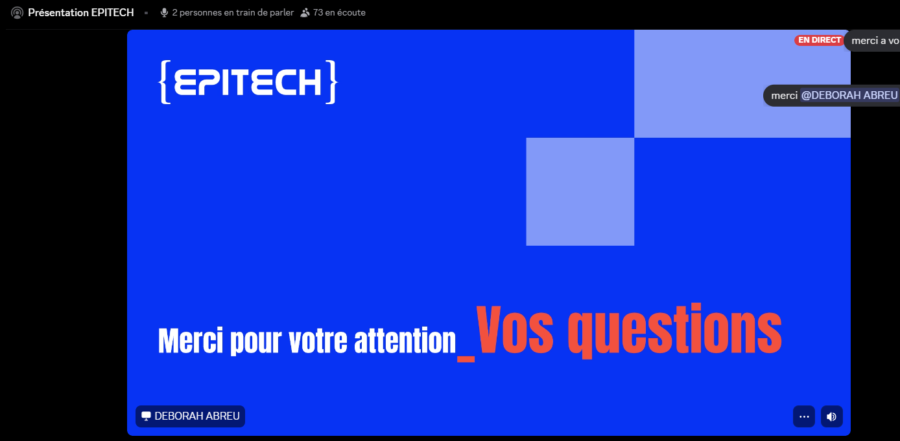

Bonjour à tous,on espère que tout le monde va bien, nous sommes le jeudi 25 juin et c'est quasiment la fin ce stage de 2 semaines à EPITECH . Je peux vous dire une chose ,c'est que le temps est passé très vite tellement les ateliers et les découvertes étaient plaisantes.
On remerci encore épitech pour leur accueil !!!!
Le matin de 10:00 à 12:30
cette journée, nous avons été en distanciel et ce matin,nous avons continué notre travail sur le portfolio avec pour but ultime de le finir et de corriger certaines erreurs afin qu'il soit présentable le dernier jour qui est vendredi.


Le midi, vers 12:30
comme vendredi dernier , nous avons bénéficié d'une pause déjeuner de 12:30 à 14:00 pour se détendre avant les activités de l'après-midi qui étaient assez longues et demandaient de gros efforts d'attention et de réflexion.
L'après-midi
Nous avons suivi une conférence dans laquelle tous pouvaient poser leurs propres questions sur l'entreprise optimisant ainsi le contenu de leur rapport de stage mais aussi leurs plans professionnels futures .
Lors de cette conférence, nous avons compris que l'entreprise notamment les recruteurs recherchent désormais des profils qui associent une solide expertise technique (Hard Skills) à des compétences humaines et éthiques (Soft Skills).
Elle présente les métiers d'avenir les plus recherchés dans des secteurs comme la cybersécurité, l'intelligence artificielle, le cloud ou le développement avancé.
Enfin, elle détaille le programme en 5 ans de l'école PGE, qui, prépare à ces enjeux grâce à une pédagogie par projets, des stages en entreprise et de surcroit une expérience à l'international.
Pour en savoir plus sur l'école qui nous a permis de créer ces portofolios, tu peux visiter le site d'epitech

👍 👍 👍